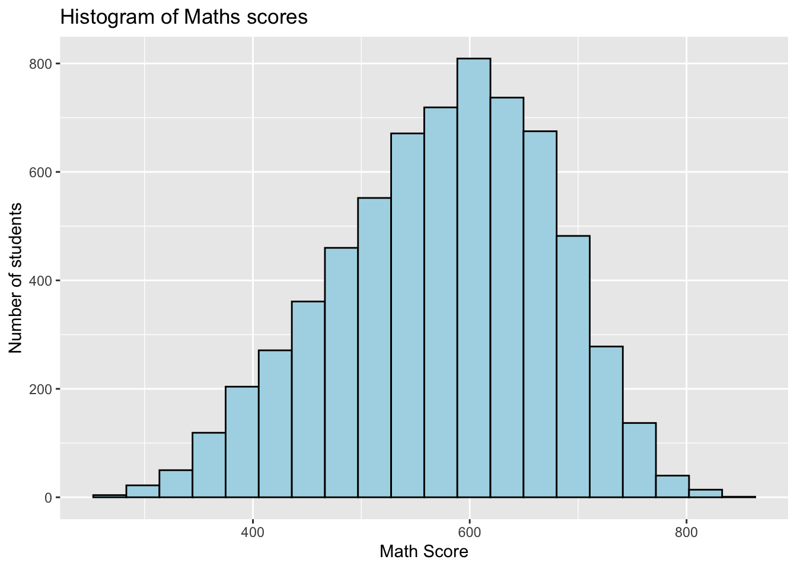
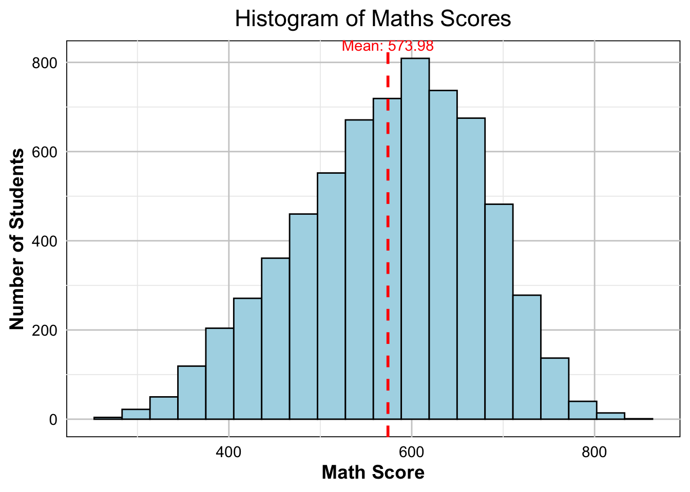
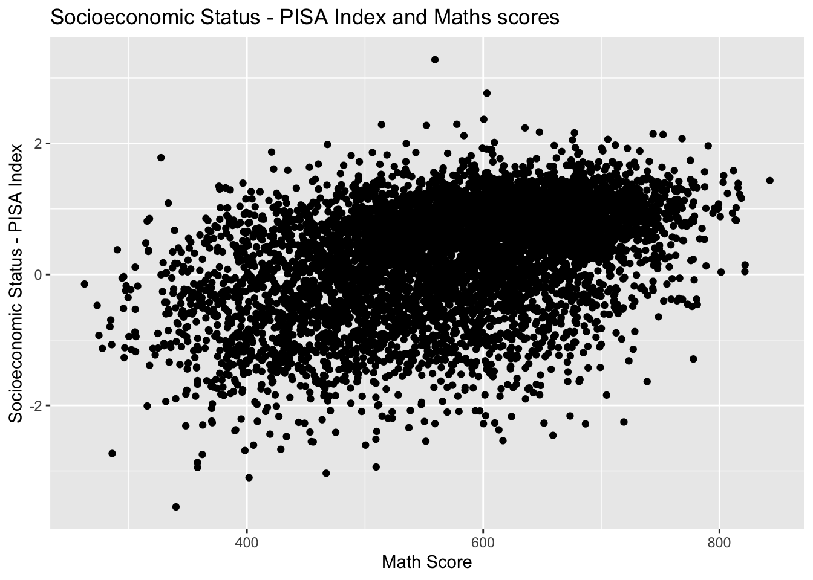
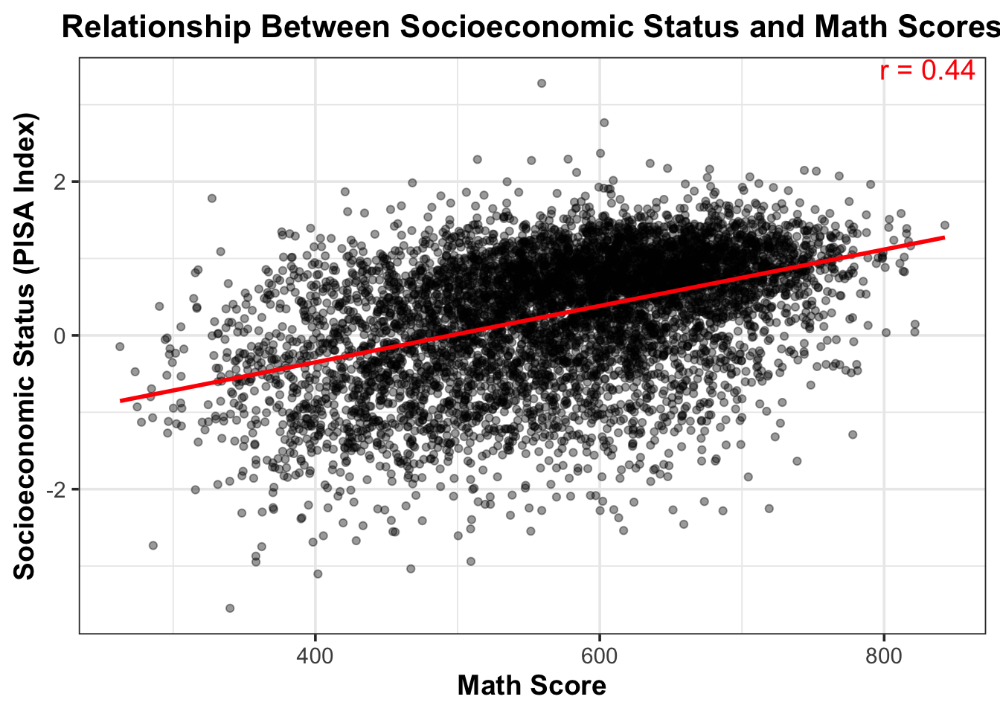
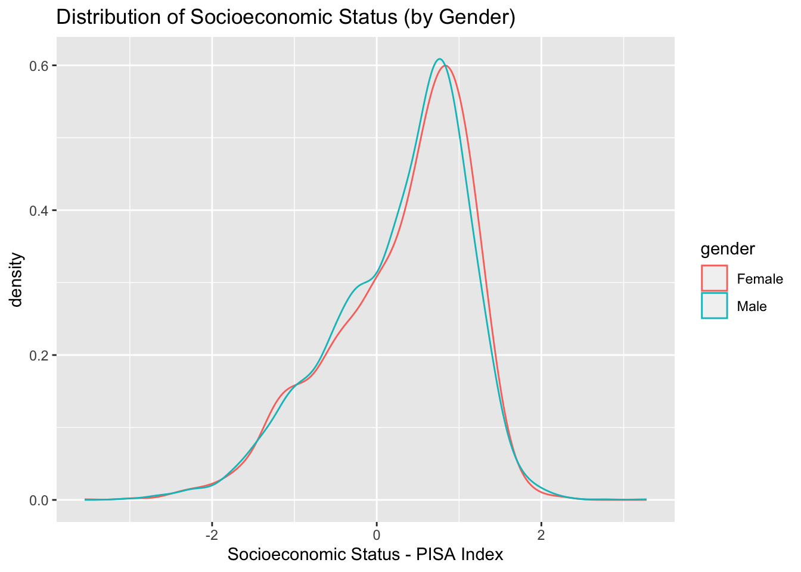
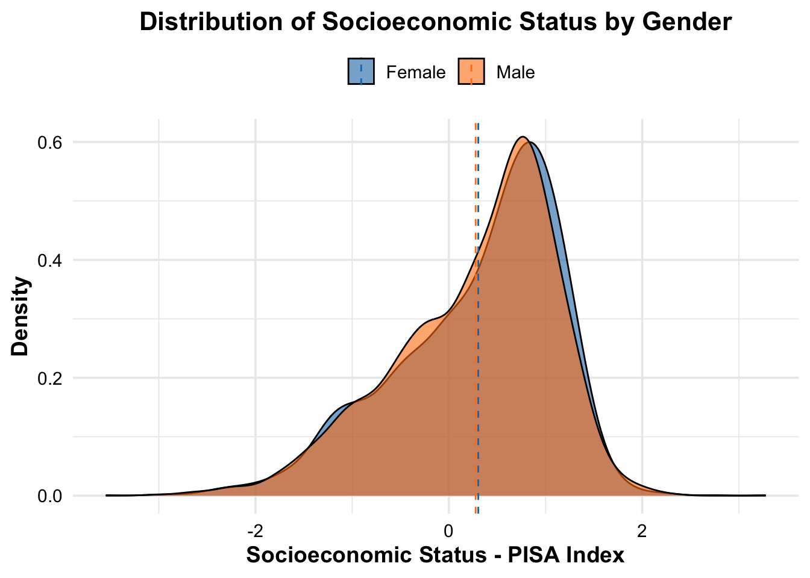
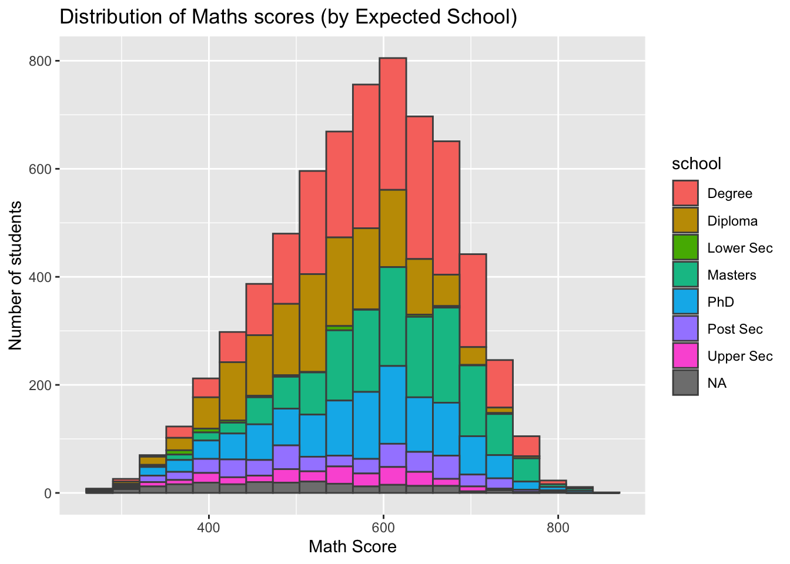
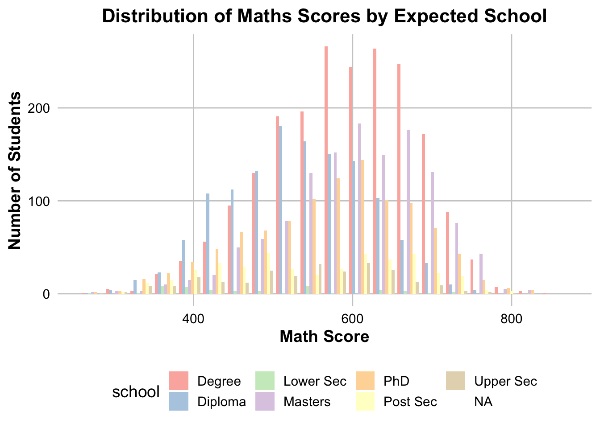
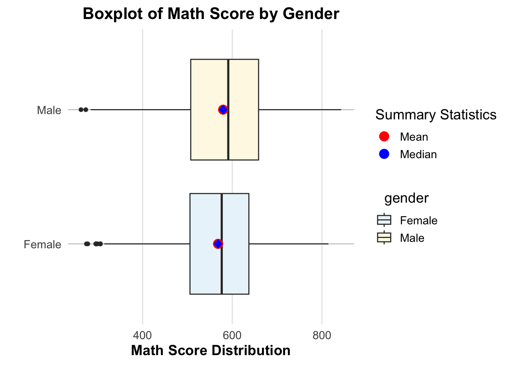

pacman::p_load(ggrepel, patchwork,
ggthemes, hrbrthemes,
tidyverse, haven) Take-home Exercise 2
Elevating Data Visualisation to the next level: Peer Evaluation and Redesigning Visualisations from Take-Home Exercise 1.
1. Overview
1.1 Setting the Scene for This Exercise
The objective of this exercise is to analyse and enhance the charts generated by a peer using R packages in Take-home Exercise 1. The evaluation will focus on aspects of clarity and aesthetics. Subsequently, the original design will be reconstructed by applying data visualiation design principles and best practices, utilising ggplot2, its extensions, and tidyverse packages learnt in lesson 1 and 2.
The data that we will be using would be the 2022 Programme for International Student Assessment (PISA), which evaluates education systems globally by testing 15-year-old students in mathematics, reading and science. The Student Questionnaire can be downloaded here.
2. Getting Started
2.1 Loading Necessary R packages
We will utilise the following packages:
- haven: Facilitates the import and export of ‘SPSS,’ ‘Stata,’ and ‘SAS’ files.
- tidyverse: A collection of packages for data manipulation and visualization, including dplyr, ggplot2 and others.
- ggrepel: An R package used with ggplot2 to enhance the positioning of text labels in plots, ensuring they avoid overlapping with data points, for a more readable visualisation.
- Patchwork: An R package designed for creating composite figures using ggplot2.
- ggthemes: An R package that offers additional themes, geoms and scales for ggplot2.
- hrbrthemes: An R package that provides themes and theme components for ggplot2 visualisations, mainly focusing on typography-centric design.
The code which loads the R packages:
2.2 Import dataset
Of course our next step involves importing the dataset. The following code snippet will outline the sequential steps we will undertake.
stu_qqq <- read_sas('data/cy08msp_stu_qqq.sas7bdat')Since we are focusing only in Singapore context, we will filter to only include Singapore.
stu_qqq_SG <- stu_qqq %>%
filter(CNT == "SGP")Save the filtered dataset as an RDS file to simplify subsequent data imports.
write_rds(stu_qqq_SG, 'data/stu_qqq_SG.rds')Read the RDS file that has been exported.
stu_qqq_SG <- read_rds('data/stu_qqq_SG.rds')This code will undergo pre-processing to select all the required variables in which we need to do further analysis on. A cleaner code have been compiled below.
Code Explanation
In the R code below, we begin by selecting specific columns of interest from the dataset stu_qqq_SG. Following this, we will calculate the row means for math, science and reading scores, providing a more comprehensive measure of individual performance. The column names are then renamed to enhance clarity. Afterwards, a subset of columns is selected for focused analysis, which includes gender, socioeconomic status (escs), and educational level (school). Gender and school variables are recoded to more interpretable factors, replacing numeric codes with meaningful and easier to understand labels. The cleaned dataset, named stu_qqq_SG_2, is saved in an RDS file for future use. The RDS file is subsequently read back into the script.
# Step 1: Select relevant columns
stu_qqq_SG_1 <- stu_qqq_SG %>%
select(ST004D01T, EXPECEDU, PV1MATH, PV2MATH, PV3MATH, PV4MATH, PV5MATH, PV6MATH, PV7MATH, PV8MATH, PV9MATH, PV10MATH, PV1SCIE, PV2SCIE, PV3SCIE, PV4SCIE, PV5SCIE, PV6SCIE, PV7SCIE, PV8SCIE, PV9SCIE, PV10SCIE, PV1READ, PV2READ, PV3READ, PV4READ, PV5READ, PV6READ, PV7READ, PV8READ, PV9READ, PV10READ, ESCS)
# Step 2: Calculate row means for math, science, and reading
stu_qqq_SG_1 <- stu_qqq_SG_1 %>%
mutate(maths = rowMeans(across(c(PV1MATH, PV2MATH, PV3MATH, PV4MATH, PV5MATH, PV6MATH, PV7MATH, PV8MATH, PV9MATH, PV10MATH))),
science = rowMeans(across(c(PV1SCIE, PV2SCIE, PV3SCIE, PV4SCIE, PV5SCIE, PV6SCIE, PV7SCIE, PV8SCIE, PV9SCIE, PV10SCIE))),
reading = rowMeans(across(c(PV1READ, PV2READ, PV3READ, PV4READ, PV5READ, PV6READ, PV7READ, PV8READ, PV9READ, PV10READ))))
# Step 3: Rename columns for clarity
stu_qqq_SG_1 <- stu_qqq_SG_1 %>%
rename(gender = ST004D01T, escs = ESCS, school = EXPECEDU)
# Step 4: Select specific columns for further analysis
stu_qqq_SG_2 <- stu_qqq_SG_1 %>%
select(gender, escs, school, maths, science, reading)
# Step 5: Recode gender and school columns
stu_qqq_SG_2 <- stu_qqq_SG_2 %>%
mutate(gender = ifelse(gender == "1", "Female", "Male"),
school = case_when(
school == "2" ~ "Lower Sec",
school == "3" ~ "Upper Sec",
school == "5" ~ "Post Sec",
school == "6" ~ "Diploma",
school == "7" ~ "Degree",
school == "8" ~ "Masters",
school == "9" ~ "PhD"
))
# Step 6: Write the cleaned data to an RDS file
write_rds(stu_qqq_SG_2, "data/stu_qqq_SG_2.rds")
# Step 7: Read the cleaned data from the RDS file
stu_qqq_SG_2 <- read_rds("data/stu_qqq_SG_2.rds")
Code Explanation - as.factor() function
Moving on, the provided code transforms the ‘gender’ and ‘school’ columns in the R data frame stu_qqq_SG_2 into factors using the as.factor() function. This conversion is beneficial when dealing with categorical variables, as factors in R provide a structured representation of such data. The gender factor represents two categories, “Male” and “Female,” while the school factor likely denotes different levels of education, such as “Lower Sec,” “Upper Sec,” and others. Converting these columns to factors ensures that R recognises and treats them appropriately as categorical variables during statistical analysis, allowing for better representation and interpretation of the data. Subsequently, a summary statistics report is generated, offering a quick overview of the of the cleaned dataset.
# Step 1: Converting gender and school into factors (categorical variables)
stu_qqq_SG_2$gender <- as.factor(stu_qqq_SG_2$gender)
stu_qqq_SG_2$school <- as.factor(stu_qqq_SG_2$school)
# Step 2: Display summary statistics
summary(stu_qqq_SG_2) gender escs school maths
Female:3248 Min. :-3.5488 Degree :2062 Min. :262.6
Male :3358 1st Qu.:-0.2327 Diploma :1299 1st Qu.:506.2
Median : 0.4817 Masters :1289 Median :582.4
Mean : 0.2904 PhD :1045 Mean :574.0
3rd Qu.: 0.9036 Post Sec: 406 3rd Qu.:648.4
Max. : 3.2780 (Other) : 296 Max. :842.7
NA's :47 NA's : 209
science reading
Min. :242.0 Min. :158.6
1st Qu.:498.9 1st Qu.:477.4
Median :571.2 Median :553.6
Mean :561.0 Mean :542.5
3rd Qu.:629.3 3rd Qu.:616.1
Max. :801.9 Max. :797.6
3. Evaluation and Redesign of Visualisations
We will be reviewing a total of five visualisation from my peer’s Take-home Exercise 1, which will undergo assessment and redesign for improved clarity and aesthetics.
3.1 Distribution of Subjects’ Scores
3.1.1 Original Design
A histogram below is used to reveal the distribution of scores for each respective subject, in this particular case, the Maths scores.

3.1.2 Critique
Critique - Clarity
- The title of the graph, “Histogram of Maths scores”, clearly states what the data represents, which is good for immediate understanding.
- The data presented appears to be continuous, and the histogram effectively shows the distribution of the math scores. However, there are no markers for the mean or median score, which could provide additional useful information about the dataset.
Critique - Aesthetics
- The colour scheme is simple and the bars are easily distinguishable, which makes the graph aesthetically pleasing and clear to read.
- The grey background is neutral and does not distract from the data, but a white background could be considered for a cleaner look.
- The text is not capitalised, which is fine for informality but could be capitalised for a more formal and professional appearance.
- There’s a consistent use of colour and no extraneous graphical elements, which is good. However, the graph could benefit from a cleaner font and perhaps a grid for easier reading of values.
3.1.3 Remake
To improve the histogram in terms of clarity and aesthetics,
Remake - Clarity:
- Include annotations for key statistics such as the mean or median to give viewers a better understanding of the central tendency of the data.
Remake - Aesthetics:
- Change the background to white for a more professional look.
- Capitalise the first letter of each label for a more formal presentation.
- Add a light grid to make it easier to read values from the graph.
- Choose a cleaner, more professional font for all text elements.
# Calculate the mean math score for annotation
mean_score <- mean(stu_qqq_SG_2$maths)
ggplot(data = stu_qqq_SG_2, aes(x = maths)) +
geom_histogram(bins = 20,
boundary = 100,
color = "black",
fill = "light blue") +
geom_vline(aes(xintercept = mean_score),
color = "red", linetype = "dashed", size = 1) +
annotate("text", x = mean_score, y = Inf, label = paste("Mean:", round(mean_score, 2)),
vjust = 0.95, color = "red") +
labs(title = "Histogram of Maths Scores",
x = "Math Score",
y = "Number of Students") +
theme_minimal(base_size = 14) +
theme(
plot.title = element_text(hjust = 0.5),
axis.title = element_text(face = "bold"),
panel.grid.major = element_line(color = "grey80", size = 0.5),
panel.background = element_rect(fill = "white"),
axis.text = element_text(color = "black")
)
3.2 Scatterplot of Socioeconomic Status vs Maths Score
3.2.1 Original Design
A scatterplot below is used to reveal the relationship between the Socioeconmic status against the scores for each respective subject, in this particular case, the Maths scores.

3.2.2 Critique
Critique- C`larity
- The title is descriptive, but it could be improved to concisely convey the key focus of the analysis, which is the relationship between socioeconomic status and math scores.
- Without a regression line, it’s difficult for the viewer to immediately grasp the nature of the relationship between the two variables.
- The scatterplot does not indicate the correlation coefficient, which quantitatively summarises the strength and direction of the linear relationship.
- Overplotting may be obscuring the density of points in certain areas, making it difficult to assess the distribution of data accurately.
Critique - Aesthetics
- The plot uses a basic colour scheme, which is clear but does not make use of colour to convey additional information or to improve visual appeal.
- All points are of the same size and colour, which could be varied to show density.
- The grey background is neutral but does nott enhance the data visualisation; a lighter background with subtle gridlines could improve readability.
3.2.3 Remake
To improve the scatterplot in terms of clarity and aesthetics, ### Remake - Clarity - Add a regression line to visually represent the relationship between math scores and socioeconomic status. This would not only clarify the direction and steepness of the relationship but also help in identifying patterns or deviations. - Calculate and display the correlation coefficient on the plot to provide a clear, numerical summary of the relationship’s strength. - Implement techniques to mitigate overplotting, such as adjusting the alpha transparency of points.
Remake - Aesthetics
- Introduce a colour gradient to reflect the density of overlapping points, which could enhance visual appeal and clarity.
- Apply a more sophisticated theme, like theme_bw(), which provides a clean and professional look with white background and gridlines.
- Increase the size and change the colour of the regression line, in this case brigh red, to make it stand out against the points.
# Calculate the Pearson correlation coefficient, handling NA values appropriately
correlation <- cor(stu_qqq_SG_2$maths, stu_qqq_SG_2$escs, use = "complete.obs")
# Create the scatterplot with improvements mentioned above
p <- ggplot(data = stu_qqq_SG_2, aes(x = maths, y = escs)) +
geom_point(alpha = 0.4) + # Adjust alpha for overplotting
geom_smooth(method = "lm", color = "red", se = FALSE) + # Add regression line
ggtitle("Relationship Between Socioeconomic Status and Math Scores") +
labs(x = "Math Score", y = "Socioeconomic Status (PISA Index)") +
theme_bw(base_size = 14) + # Use a theme with white background
theme(
plot.title = element_text(hjust = 0.5, size = 16, face = "bold"),
axis.title = element_text(size = 14, face = "bold")
)
# If correlation is not NA, add it to the plot
if (!is.na(correlation)) {
p <- p + annotate("text", x = Inf, y = Inf, label = sprintf("r = %.2f", correlation),
hjust = 1.1, vjust = 1.1, color = "red", size = 5)
}
# Print the plot
print(p)
Note
In this code, geom_point() is used with an alpha value to handle overplotting, geom_smooth() adds the regression line, and annotate() adds the correlation coefficient.
3.3 Distribution of Socioeconomic Status (by Gender)
3.3.1 Original Design
A geom_density plot below is used to reveal the distribution between the Socioeconmic status by Gender.
ggplot(data=stu_qqq_SG_2,
aes(x = escs,
colour = gender)) +
geom_density()+
ggtitle("Distribution of Socioeconomic Status (by Gender)")+
labs(x = "Socioeconomic Status - PISA Index")
3.3.2 Critique
Critique - Clarity
- Rhe legend is clear and distinguishes between genders, which is good. However, more neutral colours could be used.
- The plot indicates skewness, but without the actual data points or additional statistical annotations, it is difficult to validate the findings stated about the skewness or the comparative peaks of the distribution.
- The x-axis is well labeled, but the y-axis is not labeled at all, which could lead to confusion about what the density values represent.
Critique - Aesthetics
- The colours are easily distinguishable but as mentioned earlier, may not be the best choice due to potential gender stereotyping.
- The default grey background and grid might not be the most aesthetically pleasing. A cleaner look might be achieved with a white background and less prominent grid lines.
- The density lines are quite thin. Increasing their thickness could make them stand out more clearly against the background.
3.3.3 Remake
To improve the density plot in terms of clarity and aesthetics, ### Remake - Clarity - Adding annotations for mean, median, or mode for each gender could provide more context. - If the lines are overlapping significantly, consider using fill with alpha to differentiate the distributions while showing overlap.
Remake - Aesthetics
- In terms ot theme, we are using theme_minimal() for a more modern, clean aesthetic.
- For colour palettemm we will opt for a colourblind-friendly palette or more neutral tones.
- We will also increase the line thickness for better visibility.
# Calculate mean for each gender
stats <- stu_qqq_SG_2 %>%
group_by(gender) %>%
summarise(mean = mean(escs, na.rm = TRUE))
# Create the density plot with annotations for mean
ggplot(data = stu_qqq_SG_2, aes(x = escs, fill = gender)) +
geom_density(alpha = 0.6) + # Use fill with transparency instead of color for lines
scale_fill_manual(values = c("#1f77b4", "#ff7f0e")) + # Example of a colourblind-friendly palette
geom_vline(data = stats, aes(xintercept = mean, color = gender), linetype = "dashed") +
ggtitle("Distribution of Socioeconomic Status by Gender") +
labs(x = "Socioeconomic Status - PISA Index", y = "Density") +
theme_minimal(base_size = 14) + # A cleaner theme
theme(legend.position = "top", # Position the legend on top
plot.title = element_text(hjust = 0.5, size = 16, face = "bold"),
axis.title = element_text(size = 14, face = "bold"),
axis.text = element_text(color = "black"),
legend.title = element_blank()) + # Remove the legend title
scale_color_manual(values = c("#1f77b4", "#ff7f0e")) # Match line colours to the fill colours
Note
In density plots, the y-axis represents the density of the data, which is a function of the number of observations and the bin width used in the kernel density estimation. Therefore, it may not always start at 0, especially if there are no values in the data near 0.
For the x-axis, which represents the actual data points, it is often a good practice to start at 0 if it makes sense for the data. However, in our case, for socioeconomic status or indices like PISA, which can have negative values and often do not start at 0, it may be more appropriate to start at the minimum value of the data or a meaningful reference point that provides context.
3.4 Distribution of Maths Scores by Expected School
3.4.1 Original Design
A histogram below is used to reveal the distribution between the expected school against the scores for each respective subject, in this particular case, the Maths scores.
ggplot(data=stu_qqq_SG_2,
aes(x= maths,
fill = school)) +
geom_histogram(bins=20,
color="grey30")+
ggtitle("Distribution of Maths scores (by Expected School)")+
labs(x = "Math Score")+
labs(y= "Number of students")
3.4.2 Critique
Critique - Clarity
- Overlapping Bars: The histogram uses stacked bars to represent different schools, which makes it difficult to compare the distributions of math scores between schools, especially for those not at the bottom of the stack.
- Colour Choice: The colours are distinct, but there are so many that it becomes hard to differentiate and track across the histogram. This is particularly challenging for individuals with colour vision deficiencies.
- Legend Positioning: The legend is positioned inside the plot area, which can potentially cover some of the data and reduce readability.
- Bins: With a bin width set to produce 20 bins, some detail in the distribution may be lost, especially if the range of math scores is broad.
Critique - Aesthetics
- Colour Saturation: The colours are very saturated, which can be visually overwhelming and make it harder to focus on the data.
- Gridlines: The absence of horizontal gridlines can make it hard to estimate the number of students for a given bin.
- Bar Borders: The grey borders on the bars add visual clutter, especially where colours are similar.
3.4.3 Remake
To improve the histogram in terms of clarity and aesthetics, ### Remake - Clarity - Switch to Faceted Plot: Instead of stacking, use faceted histograms or side-by-side histograms to compare distributions between schools without overlap. - Simplify Colour Palette: Use a simpler colour palette with fewer colours or shades to help distinguish between schools, or use patterns instead of colours for differentiation. - Reposition Legend: Move the legend outside the plot area, such as to the bottom or side, to avoid obscuring the data.
Remake - Aesthetics
- We use a theme with a cleaner aesthetic, such as
theme_minimal()ortheme_light(), which provides a white background and less intrusive gridlines. - Remove Bar Borders: We need to eliminate the borders or use a softer colour that does not compete with the fill colour.
- Add Horizontal Gridlines: We need to include soft horizontal gridlines for easier comparison of heights across the histogram.
# Create the histogram with improvements mentioned above
ggplot(data = stu_qqq_SG_2, aes(x = maths, fill = school)) +
geom_histogram(position = "dodge", bins = 20, color = NA) + # Use 'position = dodge' to place bars side by side
scale_fill_brewer(palette = "Pastel1") + # Use a pastel colour palette for better distinction
ggtitle("Distribution of Maths Scores by Expected School") +
labs(x = "Math Score", y = "Number of Students") +
theme_minimal(base_size = 14) + # Cleaner theme
theme(legend.position = "bottom", # Move legend to the bottom
plot.title = element_text(hjust = 0.5, size = 16, face = "bold"),
axis.title = element_text(size = 14, face = "bold"),
axis.text = element_text(color = "black"),
panel.grid.major = element_line(color = "grey80", size = 0.5),
panel.grid.minor = element_blank(),
legend.box.background = element_rect(color = "white")) # Add a background to the legend box
Note
In this code, position = "dodge" is used to place the bars side by side instead of stacking them, which greatly improves clarity when comparing between schools. A pastel colour palette from scale_fill_brewer() is used to distinguish the schools while being less visually overwhelming. The legend is moved to the bottom of the plot to avoid obscuring any data.
3.5 Boxplot between Gender and Maths Scores
3.5.1 Original Design
A boxplot below is used to reveal the distribution between maths score and Gender.
3.5.2 Critique
Critique - Clarity
- Mean Indication: The red dot indicating the mean is a good addition for showing central tendency, but there’s no legend explaining what the red dot signifies. Viewers might not realise it represents the mean math score.
- Axis Labels: While the y-axis is labeled, it could be more descriptive. Instead of “Maths Score,” a label like “Math Score Distribution” might provide more context.
- Outliers: The plot shows outliers, which is helpful, but there is no information on how these outliers were calculated or the criteria used (e.g., 1.5 times the IQR).
- Gender Labeling: The x-axis labels “Female” and “Male” could be more inclusive. The plot does not account for non-binary or other gender identities, which might be relevant depending on the context of the data.
Critique - Aesthetics
- Colour Scheme: The use of red for the mean is visually effective, but the rest of the plot is quite monochrome. Utilising a subtle colour for the boxes could improve visual appeal.
- Plot Spacing: The spacing between the two boxplots is quite large, which may not be an efficient use of space.
- Gridlines: There are no horizontal gridlines, which can help viewers better estimate the values of the quartiles and the mean.
3.5.3 Remake
To improve the boxplot in terms of clarity and aesthetics,
Remake - Clarity
- Legend for Mean: Add a legend or annotation to explain the red dot represents the mean.
- Additional Statistics: Add more summary statistics, such as the median (which the boxplot inherently shows), using different point shapes or colours to provide a fuller picture of the distribution.
- Outlier Explanation: Include a footnote or caption that explains the criteria for outliers.
Remake - Aesthetics
- Colour for Boxes: Introduce a light colour fill within the boxes to enhance visual differentiation between the quartiles and the overall distribution.
- Reduce Width: Decrease the width of the individual boxplots to bring them closer together and use space more efficiently.
- Gridlines: Add horizontal gridlines for better readability of values.
# Enhanced boxplot with additional statistics and legends
ggplot(data = stu_qqq_SG_2, aes(x = gender, y = maths)) +
geom_boxplot(aes(fill = gender)) +
scale_fill_manual(values = c("#EBF5FB", "#FEF9E7")) + # Subtle colours for the boxes
geom_point(stat = "summary", aes(color = "Mean"), fun.y = "mean", size = 4) +
geom_point(stat = "summary", aes(color = "Median"), fun.y = "median", size = 4, shape = 18) +
ggtitle("Boxplot of Math Score by Gender") +
labs(y = "Math Score Distribution", x = "", color = "Summary Statistics") + # More descriptive y-axis label, remove x-axis label
scale_color_manual(values = c("Mean" = "red", "Median" = "blue")) +
theme_minimal(base_size = 14) +
theme(
plot.title = element_text(hjust = 0.5, size = 16, face = "bold"),
axis.title = element_text(size = 14, face = "bold"),
legend.position = "right",
legend.title.align = 0.5,
panel.grid.major.y = element_line(color = "grey80", size = 0.5), # Add y gridlines
panel.grid.minor = element_blank()
) +
coord_flip() # Flip the coordinates into horizontal position
Note
This code adds subtle colours to the boxplot fills, differentiates between the mean and median with different colours and shapes, and adds y-axis gridlines for better readability. The coord_flip() is included as to flip the boxplots to a horizontal orientation, which is sometimes preferred for readability.
4. Learning Points
Flexibility in Visualisation: The exercises underscored that data visualisation is not a one-size-fits-all endeavour. Effective visualisations require a balance between clarity, information density and aesthetics. This balance can shift depending on the audience, the context and the data itself. There are multiple ways to visualise the same data, and each method can bring out different insights.
Importance of Context and Audience: It became evident that understanding the audience and the context in which the visualisation will be consumed is crucial. A plot that works well in an academic paper might not be suitable for a business presentation. Tailoring visualisations to the specific needs and expectations of the audience can greatly enhance communication.
Iterative Process: Data visualisation is an iterative process. Initial drafts can be refined by incorporating feedback, exploring different visual forms, and considering alternative data representations. The exercise of critiquing and improving visualisations reinforces the idea that a good chart or plot is often the product of several iterations.
Technical Proficiency with Tools: The exercise provided practical experience with R and ggplot2, illustrating the “grammar of graphics” approach to building visualisations. This approach emphasises the compositional nature of graphics, where layers and aesthetic mappings come together to create a complete image. Proficiency with such tools is vital for crafting effective visualisations.
Sensitivity to Details: Small details can have a large impact on the effectiveness of a visualisation. For instance, the choice of starting axes at zero or the decision to include a legend can significantly affect the interpretation of the data. These exercises have sharpened an eye for such details.
To sum up, it is crucial to engage in ongoing learning, remain receptive to feedback, keep updated of the latest visualisation techniques, and possess a blend of creative and analytical abilities.